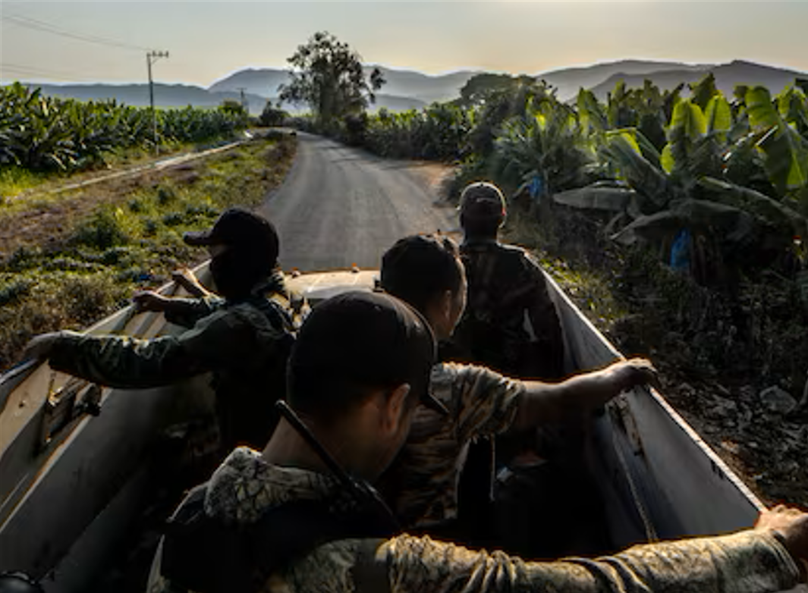

ELECCIONES EN MÉXICO Entre Michoacán y Colima: elecciones en la
frontera bajo la violenta sombra del cártel PABLO FERRI|Tecomán /
Coahuayana (México)|26 MAY 2024 - 22:10 CST Municipios del corredor
del plátano votan en junio decenas de cargos locales y federales.
Economías pujantes, bandas de criminales, viejos grupos autodefensas
y centenares de víctimas se entrelazan con la elección
Una campaña sin propuestas para los 18 millones de votantes con
discapacidad
Una campaña sin propuestas para los 18 millones de votantes con
discapacidad JORGE VAQUERO SIMANCAS|México|25 MAY 2024 - 22:18 CST
Los testimonios de cuatro personas con distintas discapacidades
revelan que para ellos las ciudades son intransitables, se les niega
el acceso a la información y los infantilizan. En este proceso
electoral los candidatos han mirado para otro lado
De la Amazonía profunda a imputado por la mayor incautación de
ayahuasca en México
De la Amazonía profunda a imputado por la mayor incautación de
ayahuasca en México EUGENIA COPPEL|México|25 MAY 2024 - 22:00 CST
Ako Kamanawa es el último indígena vinculado a un proceso penal
relacionado con la introducción del brebaje psicoactivo, considerado
como droga por la Fiscalía, pero una medicina natural para él y su
comunidad